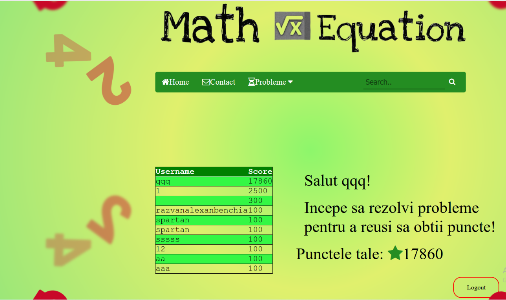
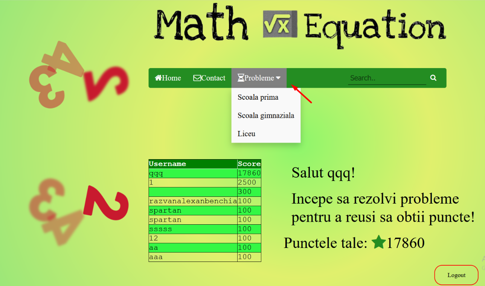
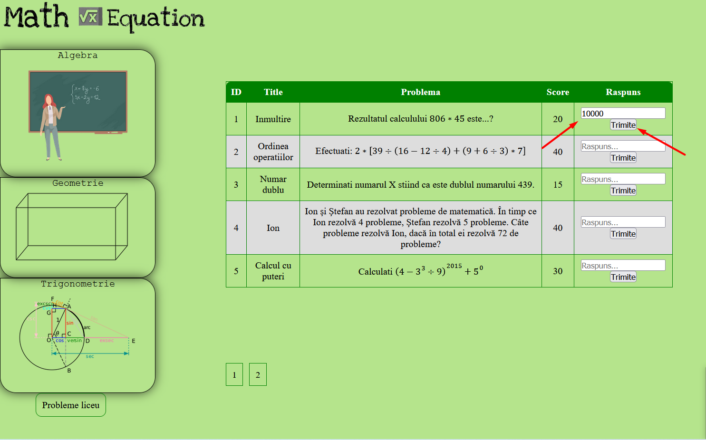
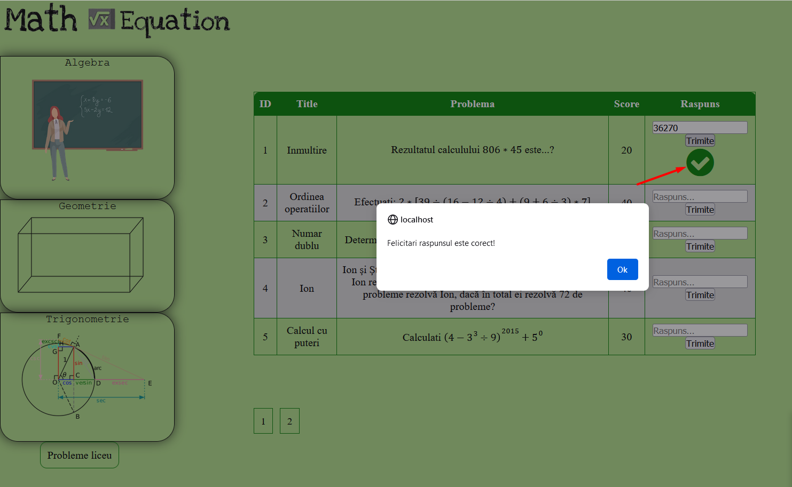

The purpose of this document is to present in a clear and objective way the user's journey in the application. In other words, the document acts as a user manual for the application. The purpose of this guide is to cover (almost) all questions that may arise for the user.
1.2 Intended Audience and Reading Suggestions
The document is addressed to both users and developers and testers. We consider it necessary to read this guide, in order to avoid any inconvenience regarding the time spent in the application. However, if there are inconveniences in the application, we recommend that you first look for the solution here.
2. User Guide
When the user accesses the site intended for the application, it is greeted by the "Home" window.
From here, the user has access to the login, registration and contact window. He can also access the proposed problems, by categories. If the user logs in, then the home window changes, the user's top appears, according to the score.

The other windows remain unchanged. The advantages of the user creating an account in the application, and solving problems while logged in, are:
storing the score in the application
appearance in the top
If the user wants to log out, he must press the "Logout" button in the home window.
From here, the user can select the category of problems from which he wants to solve.

The route here is divided into two cases:
The user solves problems in the "gymnasium" or "high school" category (they are similar). Select for example the category "gymnasium", the level "algebra". If we want to solve a problem, then we enter the answer in the corresponding box, after which we press the "Send" button.

If the answer is wrong, then the user will be warned about this:
Otherwise, if the user's answer is correct, then he will be notified both by a pop-up and by the appearance of a green check mark in the interface. In addition, if the user is authenticated, the score assigned to that issue will add up to the user's current score.
